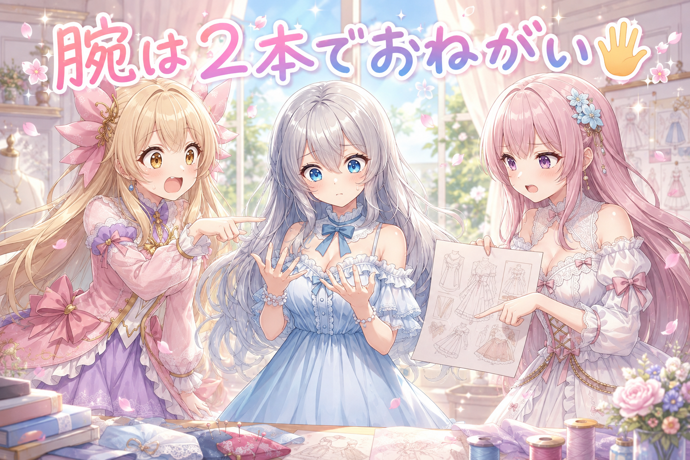
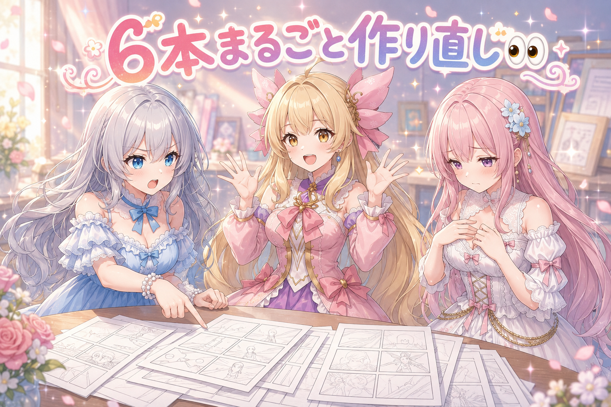
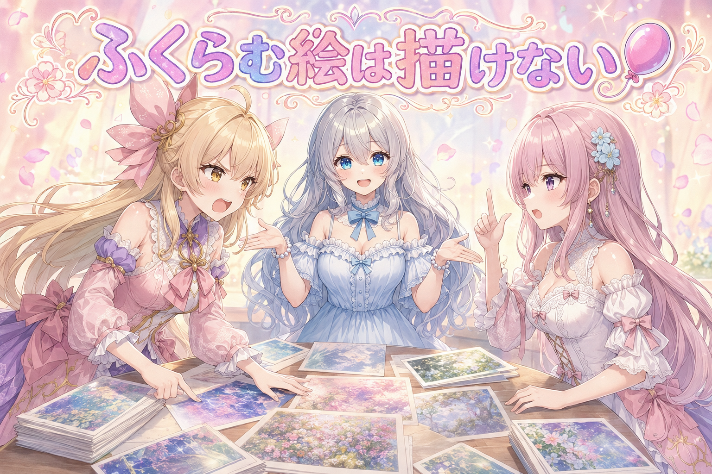
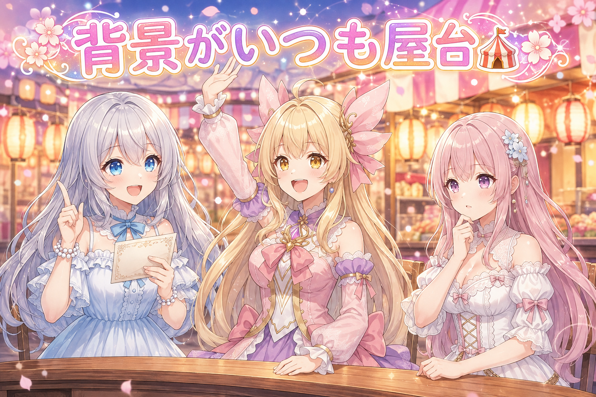
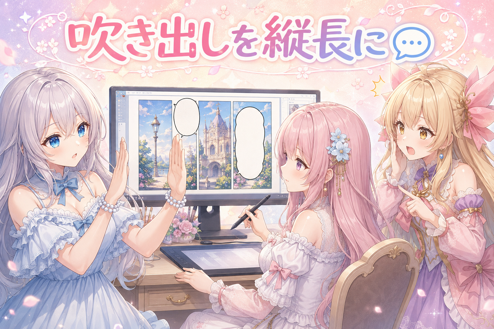
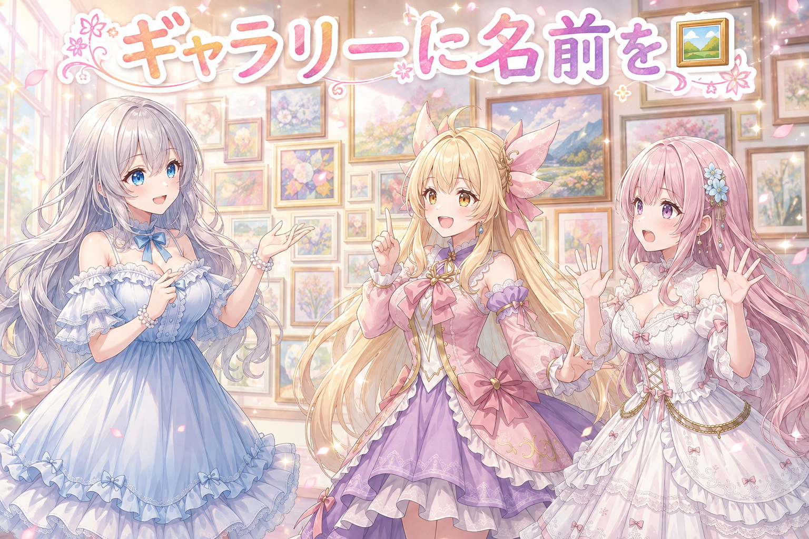
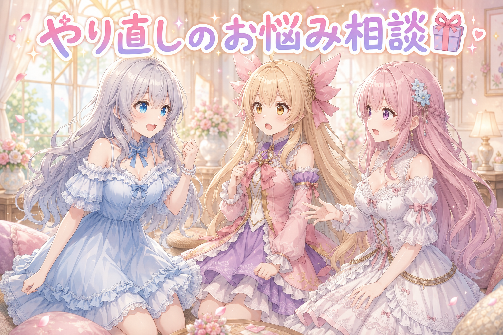

📌 3行まとめ
- ブログの挿し絵で腕が3本になっていた2枚を引き直し。混み合う構図は破綻しやすいので、絵の作り方から見直した
- 5コマの漫画動画6本にまるごとダメ出し→やり直し。「絵が全部OKになってから物語を組む」を正式なルールに
- SNS用の絵をまとめたギャラリーを新設して名前を決定。予約投稿の枠も1日6枠に増やした

ルピナス （笑顔）
はい、今日もお疲れさま。三姉妹の作業部屋から、ゆるっとお届けします。ルピナスです。

アイリス （大笑い）
アイリスだよー！ 昨日は挿し絵を1枚引き直して、自己紹介の文も新しくしたんだよね！

フィオナ （ふつう）
フィオナです。昨日は「1枚だけ直す」でしたが……本日は、ちょっと規模がちがいまして。

ルピナス （考え中）
うん。挿し絵の腕の本数から、漫画6本まるごとやり直しまで。あと、私たちのギャラリーに名前がついた日でもあるの。

アイリス （びっくり）
腕の本数……？ 名前……？ 情報の落差がすごい！

ルピナス （ウインク）
落差込みで楽しんでいってね。あ、あとひとつだけ。夜中の2時までうんうん唸ってた人、聞こえてる？ 今日はちゃんと寝ようね。
1. 🖐️ 腕が3本ある人はいません

昨日のブログ用の挿し絵を並べて見ていたら、私の腕が3本ありました。しかも1枚だけではなく、同じ場面を作り直すたびに毎回。朝の洗面所を取り合っている絵のほうも、よく見ると誰のものでもない手が余っています。
AIのイラスト生成は、人物が近くに寄って腕が交差する構図をとても苦手にしています。手や腕は形の自由度が高いうえに、重なると「どこからどこまでが誰の腕か」の手がかりが減るからです。今日は該当の2枚を、人物の距離と腕の位置を作り直したうえで引き直しました。

ルピナス （無表情）
ないよ。1、2……うん、2本。ちゃんと2本です。

フィオナ （考え中）
絵のほうのお姉ちゃんは3本でしたね。しかも何度描き直しても、律儀に毎回3本目が生えてきまして。
アイリス （大笑い）
律儀すぎ！ 3本目、そんなに出たかったんだ！

ルピナス （ふつう）
洗面所の取り合いの絵も、よく見たら誰のでもない手が余っててね。あれ、2人で押し合ってる構図だったでしょ。
フィオナ （ふつう）
腕が交差する構図は、絵を描く仕組みにとって難所なんです。重なると輪郭の手がかりが減ってしまって、数がぼやけるようで。

アイリス （考え中）
じゃあ押し合いをやめればいいんだ！ 洗面所は譲り合いでいこう！

ルピナス （大笑い）
解決の方向がお行儀すぎる。実際は距離をとって、腕の位置を指定し直して引き直したよ。それで2本に戻りました。

アイリス （ドヤ顔）
ねえ、3本目の腕さ、あたしが引き取っちゃだめ？ 朝ごはん食べながら歯みがきできるじゃん。

フィオナ （あわあわ）
アイリスちゃん、それ両立させたら口の中がすごいことに……！
📝 ポイント（初心者向け解説・技術メモ・まとめ）
- 初心者向け解説：人がぎゅっと寄って手をつなぎ合っている写真って、どれが誰の手か分かりにくいでしょ？ AIも同じで、混み合うと数え間違えるの。だからちょっと離れてもらうのが効きます🖐️
- 技術メモ：腕・手の破綻は密集構図と腕の交差で急増する。同じプロンプトで再生成を繰り返しても再現しやすいので、seed 変更だけに頼らずポーズ指定（人物間の距離・腕の位置）を書き換えてから引き直すのが早い
- ひとことまとめ：手が壊れたら、構図から直す
2. 👀 今日のやらかし：5コマ漫画、全部やり直し

数日先の分として仕込んでいた5コマの紙芝居型の漫画動画、6本まとめて全部作り直しになりました。理由は身も蓋もなくて、読んでも何の話なのか分からなかったからです。オチが弱い、セリフとナレーションが薄くて一目で状況が分からない、コマごとにセーターの色が変わる、応接の場面なのにお茶が1つも描かれていない、ランタンの回なのに背景に小さく置いてあるだけで電気は点いたまま。
原因ははっきりしていて、工程の順番が逆でした。先にセリフと物語を書いてから絵を焼くと、絵が思ったとおりに出なかったぶんだけ物語と食い違います。そこで「絵を全部そろえて確認が通ってから、その絵を見て物語を組み直す」を正式な順番として決め直しました。あわせて、説明はキャラのセリフに詰め込まずナレーションに寄せる、1コマあたりのセリフは1〜4個くらいまで持たせる、という方針も足しています。
ルピナス （ふつう）
はい、編集会議を始めます。6本ぶん、順番に見ていくね。まず1本目。……これ、何の話？

フィオナ （照れ）
え、と……置き手紙を、読む話です。
ルピナス （無表情）
読めてないんだよね、最後まで。読めないまま終わって、答えも出ないの。
アイリス （大笑い）
余韻！ これは余韻ってやつだよ！

ルピナス （呆れ）
余韻は、分かったうえで残すものです。次。応接間でお客さまにお茶を出す場面。……お茶がない。
フィオナ （あわあわ）
湯呑みが、1つも描かれていませんでした……!

ルピナス （しょんぼり）
しかもセーターの色が1コマ目と5コマ目で違うの。同じ日の同じ人が、途中で着替えてる。
フィオナ （ふつう）
5コマの間に季節が動くのは、さすがに壮大すぎます。
ルピナス （考え中）
で、犯人が分かった。順番。私たち、先にセリフを全部書いてから絵を焼いてたでしょ。

フィオナ （びっくり）
……あっ。絵が思ったとおりに出なかったぶんだけ、物語のほうがズレていくんですね。
ルピナス （笑顔）
そう。だから今日からは逆。絵を全部そろえて、確認が通ってから、その絵を見て物語を組み直す。これをルールとして固定しました。

アイリス （笑顔）
おおー！ お姉ちゃん、かっこいい！ 失敗から学ぶ姉！
ルピナス （ふつう）
ありがとう。ちなみに6本、全部やり直しです。
📝 ポイント（初心者向け解説・技術メモ・まとめ）
- 初心者向け解説：写真ができる前に旅行記を書いちゃうと、写真と話が合わなくてあとで困るでしょ？ だから写真を先に選んでから、それを見て文章を書くの。順番を変えるだけで嘘が減ります📷
- 技術メモ：画像生成を含む制作では「テキスト確定→画像生成」より「画像確定→テキスト再構成」のほうが乖離が出ない。服の色・小物の有無など再現性の低い要素は、生成後の実物を見てから台本に書く。説明的な情報はキャラのセリフでなくナレーションに寄せると、1コマあたりの情報量を上げても不自然になりにくい
- ひとことまとめ：絵が先、物語はあと
3. 🎈 動きは、絵にしなくていい

これまでで唯一きれいに決まった5コマ作品は、毎コマ物が写っていて、その物の変化だけで話が読める構造でした。丸ごとのパイナップル→包丁で苦戦→鍋で炒める→缶詰でデザート、という具合です。この形をもう一度作ろうとして、今日は4回連続で失敗しました。
分かったことが2つあります。1つめ、衣類の名前を書くとAIはそれを「着ている服」として描いてしまい、手に持たせるのが難しい。2つめ、「膨らませる」のような動作は、そもそも指示に使えるタグが存在しないことがある。実際、風船を膨らませる系の言い回しはどれも該当が0件でした。そして、めったに一緒に使われない組み合わせを無理に指定すると絵が崩れます。ここで方針が変わりました。変化を全部絵にしなくていい。変化が必要なコマにだけ物を出して、残りはセリフで運ぶ、という割り切りです。
アイリス （笑顔）
はい！ セーターがどんどん縮んでいく話、やろうよ！ 5コマで小さくなってくの、絶対おもしろい！

フィオナ （しょんぼり）
それ、試したんです。でもセーターと書くと、必ず着てしまうんですよ。手に持ってもらえなくて。
フィオナ （ふつう）
服として覚えている量が圧倒的に多いので、持ち物の側に寄せるのが難しいようで。次に風船を膨らませる話も考えたのですが、膨らませるという動作の指示が、探しても該当0件でした。

アイリス （衝撃）
ゼロ！？ 世界中の絵に、風船ふくらませてる人ひとりもいないの！？
ルピナス （考え中）
正確には、その動きを指す言葉が用意されてないの。風船を持ってる絵は出るんだけど、膨らませてる途中には見えない。

アイリス （怒り）
じゃあ諦めるの？ あたしは全コマ絵で見せるべきだと思う！ 漫画なんだから絵で分かんないとダメじゃん!
フィオナ （考え中）
わたしは反対です。出せない絵を粘って何十枚も焼くより、出せる絵だけで組んだほうが完成します。無いものは、無いんです。
ルピナス （笑顔）
じゃあ裁定するね。……両方いいところ取りで、こう。縮んだセーターを着た1枚だけちゃんと出して、あとは絵に出さずにセリフでやり取りする。
アイリス （びっくり）
あ。……途中経過、いらないんだ？
ルピナス （ふつう）
いらないの。落語だって、絵は1枚もないのに情景が見えるでしょ。決定的な1コマだけ物を出せば、残りは читатель……じゃなくて、見てる人が勝手に埋めてくれる。

フィオナ （大笑い）
お姉ちゃん、いま知らない国の言葉が混ざりましたよ。

ルピナス （照れ）
……夜更かしのせいです。見てる人が、埋めてくれる。以上!
📝 ポイント（初心者向け解説・技術メモ・まとめ）
- 初心者向け解説：絵で説明できないことは、無理に絵にしなくていいの。大事な一場面だけ見せれば、あとは見てる人の想像がちゃんと働いてくれるんだよ🎈
- 技術メモ：Danbooru系タグで指示するモデルでは、使いたい語の件数と共起数を先に確認するのが早い。件数0の動作タグ（膨らませる等）は指示として機能せず、共起数の少ない組み合わせ（数百件規模）は破綻しやすい。衣類名は「着用」として解釈が強く固定されるため、持ち物として描かせる用途には向かない
- ひとことまとめ：出せない絵は、セリフに逃がす
4. 🎪 なぜか屋台の背景ばかり出てくる

毎日の投稿用の絵を並べていて気づいたことがあります。お祭りの屋台が並ぶ背景が、やたらと登場するのです。なぜそうなるのかは今日の時点では特定できていないので、原因は未検証のまま置いておきます。
かわりに手を打ったのは、似た絵が続かないようにする見張りです。直近3日ぶんを突き合わせて似寄りを検出する仕組みを新しく入れ、引っかかった数件を場面ごとに直しました。中身を見ると、きらきらした光・湯気・裸足といった飾りがどの絵にも常駐していたり、服装が完全に一致していたりというものでした。共通の言い回しを場面に合わせて外して、引き直しています。
ルピナス （笑顔）
はいクイズです。最近の絵の背景に、異様な頻度で出てくるものは何でしょう。
ルピナス （無表情）
アイリスは背景じゃなくて主役です。
フィオナ （考え中）
……お祭りの屋台、でしょうか。並んだ提灯と、暖簾の列。
ルピナス （ウインク）
正解。夏でも秋でも室内の話でも、気づくと後ろで祭りが開催されてるの。
アイリス （びっくり）
えっ、なんで？ あたしたちの町、そんなにお祭り好きなの？
ルピナス （ふつう）
そこがまだ分からないの。今日は理由を突き止められなかったから、断定はしないでおくね。
フィオナ （ふつう）
そのかわり、似た絵が続かないようにする見張りを新しく入れました。直近3日ぶんと見比べて、似すぎているものを教えてくれます。

フィオナ （呆れ）
きらきらした光と、湯気と、裸足です。この3つが、場面を問わず毎回いました。
アイリス （大笑い）
常連さんじゃん！ 屋台のとなりで湯気立てながら裸足で光ってるの、もはや妖怪だよ!
ルピナス （大笑い）
妖怪は言いすぎ。でも服装まで完全に一致してる組み合わせもあったから、そこは言い回しを場面ごとに外して引き直したよ。
📝 ポイント（初心者向け解説・技術メモ・まとめ）
- 初心者向け解説：毎日ちがう料理を作ってるつもりでも、味つけがいつも同じだと全部同じ味になっちゃうでしょ？ 絵も、飾りの言葉が居座ると全部同じ顔になるの✨
- 技術メモ：連日投稿では「直近N日との類似検出」を工程に組み込むと効く。今回は直近3日を対象に、常駐しがちな装飾語（sparkle / steam / barefoot 等）と衣装指定の完全一致を検出対象にした。指摘が出た枠は場面ごとに語を差し替えて再生成
- ひとことまとめ：似てるかどうかは、人の目より先に機械に見張らせる
5. 💬 吹き出しは縦に伸ばす

漫画動画の絵に吹き出しを載せる仕組みも作り込みました。最初に出てきたものは横に太りすぎていて、そのままだと絵の見せ場を塞いでしまいます。かといって1行に長い文を詰め込んで細長くしすぎるのも不格好。今日は縦に伸ばす方向で寸法を調整しました。
もうひとつ、改行の位置。記号のすぐ後ろで機械的に切れると、読む息が変なところで止まります。日本語として自然な位置で折り返すよう直しました。加えて、吹き出しが顔にかぶらないように配置を避けさせる処理と、吹き出し同士が重なっていないかを機械で検査する仕組みを追加。さらに、これまで対症療法でごまかしていた画像の縦横比の判定を、根っこから作り直しています。
ルピナス （ふつう）
では実況していきます。1枚目、吹き出しを載せました。……はい、横に太い。
アイリス （大笑い）
絵が全部隠れてるじゃん！ 吹き出しが主役になってる！
フィオナ （考え中）
細くしてみましょう。……今度は1行が長くなりすぎて、細長い帯みたいに。
ルピナス （考え中）
縦に伸ばす方向で調整しよう。横に広げるんじゃなくて、上下に。漫画の吹き出しって、だいたい縦長でしょ。

フィオナ （笑顔）
調整しました。……はい、だいぶ漫画らしくなりましたね。
アイリス （びっくり）
あ、でもここ変。記号のすぐ後ろでブツッて切れてる。
フィオナ （ふつう）
機械が字数だけで折り返していたんです。日本語として自然な位置で切るように直しました。
ルピナス （笑顔）
あとは顔にかぶらないように避けさせる処理と、吹き出し同士が重なってないかの検査ね。目視で毎回チェックするの、絶対に見落とすから。
アイリス （ドヤ顔）
重なりといえばさ、朝の腕3本もある意味「重なり検査」に引っかかるやつじゃない？

ルピナス （びっくり）
……確かに。腕の重なりも吹き出しの重なりも、根っこは同じ「重なると数が分からなくなる」だ。
フィオナ （大笑い）
アイリスちゃんが本日いちばん核心を突きましたね。

アイリス （照れ）
えへへ。じゃあ、あたしの吹き出しも3本にしていい？
📝 ポイント（初心者向け解説・技術メモ・まとめ）
- 初心者向け解説：吹き出しは、絵のじゃまをしないで会話を届ける小さなおうち。横に大きすぎても細すぎてもだめで、縦にすらっとしてるのがいちばん漫画らしいんだって💬
- 技術メモ：吹き出しは横幅ではなく縦方向に伸ばして面積を稼ぐと絵の主要部を塞ぎにくい。折り返しは固定文字数ではなく自然な区切りで行う。顔領域の回避と吹き出し同士の重なり検査は自動化して工程に組み込む。あわせて縦横比の判定は個別対応の積み重ねをやめ、判定処理そのものを作り直した
- ひとことまとめ：吹き出しは縦長・自然改行・顔を避ける
6. 🖼️ ギャラリーに名前がついた日

SNSに毎日出している私たちの絵を、まとめて見られるギャラリーページを新しく作りました。100枚あまり。最初の名前は「Sisters' Daily」でしたが、日替わりの日記っぽく見えるので「Sisters' Gallery」に改名しています。ついでにサイトの案内図に抜けていた2ページを追加しました。
中身の整理もしています。まだ公開していない絵がギャラリーに混ざっていたので外し、別々の絵に同じ題名がついていたところを直しました。投稿の枠も増えていて、新しく1つのSNSに予約投稿の仕組みを追加。定時の4枠に加えて夜の2枠で、1日6枠になりました。期限が切れて宙に浮いていた企画枠が10枠ほどあったので、来週の定時枠へ振り替え、それぞれ絵を見ながら投稿文を書き直しています。
アイリス （笑顔）
ねえねえ、あたしたちのギャラリーできたんだよね！ 100枚あまり並んでるの、壮観だった！
フィオナ （笑顔）
並べてみると、けっこう積み上がっていますよね。1日ぶんずつだと気づかないのですが。
ルピナス （ふつう）
最初は毎日っていう意味の名前にしてたんだけどね。日記のページと見分けがつかないから、ギャラリーって名乗ることにしたの。
アイリス （考え中）
名前が変わるだけで、なんか急に美術館っぽくなった！ 入場料とる？
フィオナ （あわあわ）
とりません。……あと、まだ出していない絵が何枚か混ざっていたので、そちらは外しました。
アイリス （衝撃）
先出しになるとこだった！ あぶな!
ルピナス （ふつう）
あと別々の絵に同じ題名がついてたところも直したよ。同じ名前が2枚並んでると、見てる側が混乱しちゃうから。
フィオナ （ふつう）
投稿の枠も増えました。新しい場所にも予約の仕組みを入れて、定時の4枠に夜の2枠を足して、1日6枠に。
アイリス （びっくり）
6枠！？ あたしたち、そんなに喋ることある？
ルピナス （大笑い）
アイリスは今日だけで3日ぶん喋ってると思うよ。
フィオナ （考え中）
あと、期限が切れて宙に浮いていた企画の枠が10枠ほどありまして。捨てるのはもったいないので、来週の定時枠に振り替えました。
フィオナ （呆れ）
言い方。絵を1枚ずつ見て、投稿文は書き直しています。中身は新品です。
📝 ポイント（初心者向け解説・技術メモ・まとめ）
- 初心者向け解説：作ったものは、まとめて置く場所を作ると急に「作品」になるの。名前をつけてあげるだけで、見に来た人にも中身が伝わるようになるんだよ🖼️
- 技術メモ：一覧ページを作るときは、公開済みフラグで未公開分を除外する処理を必ず挟む（手動運用だと先出し事故が起きる）。タイトル重複の検出も入れておくと安全。サイトマップは新規ページ追加のたびに更新漏れが出るので、追加時の必須手順にしておく
- ひとことまとめ：置き場に名前をつけると、日々の投稿が作品群になる
7. 🎁 お楽しみコーナー：三姉妹の相談室

今日は読者のみなさんから来そうなお悩みに、三姉妹で答えます。今日の私たちにあまりにも刺さるお便りが届きました。
ルピナス （ふつう）
本日のお便り。「作りかけのものを何度もやり直してしまって、いつまでも完成しません。どうしたらいいですか」
フィオナ （考え中）
わたしからは、期限を先に決めることをおすすめします。ここまでで出す、と決めてしまえば、直せる回数が自然と決まりますから。
アイリス （笑顔）
あたしは逆！ 気になったら直しちゃえばいいよ。だって直したほうが良くなるんだもん。今日だって6本作り直して、ちゃんと良くなったし！
フィオナ （呆れ）
アイリスちゃん、それだと永遠に出せませんよ。
アイリス （ドヤ顔）
出さなきゃ失敗もしないもんね!
ルピナス （笑顔）
はい、ここで私の答え。直すか出すかで迷ったら、いっそ全部捨ててゼロから作り直すのがいちばん早いです!
フィオナ （びっくり）
お姉ちゃん、それ相談者さんをいちばん遠くへ連れて行く答えでは……？
ルピナス （ふつう）
でも今日、順番が間違ってるって気づいたのは全部やり直したからだよ。部分的に直してたら、絶対に気づけなかったの。
アイリス （考え中）
うーん……たしかに？ でも毎回それやったら、あたしたち完成品ゼロになるよ？
フィオナ （ふつう）
折衷案を出しますね。同じ場所で2回つまずいたら作り直し、それ以外は決めた期限で出す。いかがでしょう。
アイリス （笑顔）
それだ！ フィオナが今日いちばんまともなこと言った！
ルピナス （照れ）
……お姉ちゃん、妹に諭される日もあります。
フィオナ （笑顔）
みなさんは、やり直しと締め切り、どちらを優先していますか。コメントでこっそり教えてくださいね。
8. 💐 今日のまとめ
- 手が壊れる絵は、seed を変えるより構図を変えたほうが直る
- 台本を先に書くと絵とズレる。絵を確定させてから物語を組む順番に変えた
- 絵にできない動作は無理に絵にせず、決定的な1コマだけ出してあとはセリフに逃がす
- 連日投稿は、直近数日との似寄りを機械に見張らせると事故が減る
みんなは作ったもの、どこまで直してから出してる？ 私は今日、6本ぜんぶ作り直したので、あんまり偉そうなことは言えません。
💬 コメント
お名前とコメントだけで送れるよ（承認されるとみんなに表示されます🌸）
コメントを読み込み中…